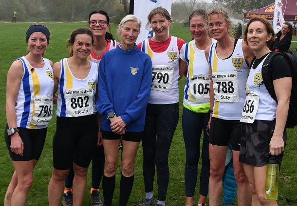

Sevenoaks AC women repeated their win from the first match as 42 SAC runners contested match 2 at Swanley Park on 13th November.
Pauline Dalton, Suzy Claridge, Caroline Fenwick and Nicola Glover were the scorers in another brilliant performance by the team.
The SAC men repeated their 5th place from the first match with John Stevens, William Palmer, Chris Desmond, Paul Fanti, Mike Lochead, James Mason, Javiier Montoya Montero and Richard Alford-Smith the scorers. The combined team was third.
The SAC runners on the day were:
| Ov Pos | Lg Pos | Bib | Runner | Age | Time | Club | Score | Rtg | # |
|---|---|---|---|---|---|---|---|---|---|
| 5 | 5 | 820 | James Mason | 39 | 30:13 | Sevenoaks AC | M1 | 98.85 | 16 |
| 33 | 33 | 826 | Javier Montoya Montero | 35 | 32:47 | Sevenoaks AC | M2 | 90.78 | Debut |
| 39 | 39 | 1059 | Paul Fanti | 49 | 33:15 | Sevenoaks AC | V40:1 | 89.05 | 2 |
| 46 | 46 | 834 | William Palmer | 50 | 33:44 | Sevenoaks AC | V50:1 | 87.03 | 3 |
| 48 | 48 | 816 | Michael Lochead | 41 | 33:45 | Sevenoaks AC | V40:2 | 86.46 | 18 |
| 51 | 51 | 780 | Richard Alford-Smith | 46 | 33:57 | Sevenoaks AC | M3 | 85.59 | 11 |
| 64 | 63 | 854 | Daniel Witt | 47 | 34:19 | Sevenoaks AC | NSBLS | 82.13 | 63 |
| 72 | 69 | 808 | Andrew Hutchinson | 43 | 34:40 | Sevenoaks AC | NSBLS | 80.40 | 17 |
| 78 | 74 | 827 | Shaun Mullen | 46 | 34:55 | Sevenoaks AC | NSBLS | 78.96 | 10 |
| 86 | 82 | 825 | Andrew Monk | 46 | 35:13 | Sevenoaks AC | NSBLS | 76.66 | 2 |
| 95 | 91 | 847 | Harvey Taylor | 18 | 36:09 | Sevenoaks AC | NSBLS | 74.06 | 8 |
| 97 | 93 | 792 | Chris Desmond | 59 | 36:11 | Sevenoaks AC | V50:2 | 73.49 | 84 |
| 100 | 96 | 799 | Jimmy George | 41 | 36:13 | Sevenoaks AC | NSBLS | 72.62 | 16 |
| 103 | 98 | 813 | Sean Leith | 51 | 36:19 | Sevenoaks AC | NSBLS | 72.05 | 3 |
| 112 | 7 | 796 | Caroline Fenwick | 44 | 36:38 | Sevenoaks AC | V35 | 97.42 | 3 |
| 114 | 107 | 830 | Sebastian Naughton | 48 | 36:40 | Sevenoaks AC | NSBLS | 69.45 | 6 |
| 131 | 11 | 802 | Nicola Glover | 34 | 37:24 | Sevenoaks AC | F1 | 95.71 | 4 |
| 132 | 12 | 788 | Suzy Claridge | 50 | 37:25 | Sevenoaks AC | V45 | 95.28 | 11 |
| 137 | 124 | 829 | James Nash | 31 | 37:34 | Sevenoaks AC | NSBLS | 64.55 | 10 |
| 138 | 14 | 791 | Julia Davis | 25 | 37:36 | Sevenoaks AC | NSBLS | 94.42 | 7 |
| 139 | 125 | 824 | Andrew Milne | 40 | 37:37 | Sevenoaks AC | NSBLS | 64.27 | 33 |
| 151 | 132 | 793 | Graham Dwyer | 50 | 38:10 | Sevenoaks AC | NSBLS | 62.25 | 17 |
| 181 | 153 | 845 | John Stevens | 61 | 39:07 | Sevenoaks AC | V60 | 56.20 | 22 |
| 185 | 29 | 801 | Vanessa Gilmartin | 47 | 39:19 | Sevenoaks AC | NSBLS | 87.98 | 23 |
| 206 | 35 | 790 | Pauline Dalton | 58 | 39:48 | Sevenoaks AC | V55 | 85.41 | 56 |
| 214 | 177 | 811 | Leonard Lai King | 43 | 39:57 | Sevenoaks AC | NS | 49.28 | 6 |
| 229 | 189 | 849 | Anthony Waldron | 55 | 40:27 | Sevenoaks AC | NS | 45.82 | 31 |
| 247 | 51 | 798 | Heather Fitzmaurice | 52 | 41:05 | Sevenoaks AC | NS | 78.54 | 80 |
| 248 | 197 | 819 | Jonathan Marsh | 62 | 41:07 | Sevenoaks AC | NS | 43.52 | 3 |
| 249 | 198 | 818 | Alan Male | 52 | 41:09 | Sevenoaks AC | NS | 43.23 | 2 |
| 254 | 202 | 794 | Andrew Evans | 52 | 41:27 | Sevenoaks AC | NS | 42.07 | 49 |
| 260 | 55 | 828 | Katrina Murphy | 34 | 41:58 | Sevenoaks AC | NS | 76.82 | 2 |
| 287 | 222 | 837 | Sham Pickard | 52 | 42:53 | Sevenoaks AC | NS | 36.31 | 2 |
| 294 | 227 | 805 | Simon Hallpike | 69 | 43:10 | Sevenoaks AC | NS | 34.87 | 57 |
| 305 | 73 | 852 | Lucy Wilkes | 43 | 43:29 | Sevenoaks AC | NS | 69.10 | 7 |
| 322 | 80 | 843 | Sarah Shewell | 63 | 44:09 | Sevenoaks AC | NS | 66.09 | 119 |
| 363 | 269 | 789 | Duncan Cochrane | 65 | 45:11 | Sevenoaks AC | NS | 22.77 | 37 |
| 370 | 98 | 856 | Samantha Znetyniak | 47 | 45:29 | Sevenoaks AC | NS | 58.37 | 10 |
| 456 | 144 | 848 | Ly Truong | 37 | 49:59 | Sevenoaks AC | NS | 38.63 | 2 |
| 459 | 146 | 1058 | Mandy Lock | 60 | 50:11 | Sevenoaks AC | NS | 37.77 | 3 |
| 498 | 324 | 846 | Lionel Stielow | 73 | 52:44 | Sevenoaks AC | NS | 6.92 | 22 |
| 534 | 200 | 783 | Alzbeta Benn | 41 | 55:58 | Sevenoaks AC | NS | 14.59 | 8 |

In the standings, the women lead, the men are fifth and the combined team is now second. The full results are here. The next race in the series is at Oxleas Woods, Eltham on 20th November.